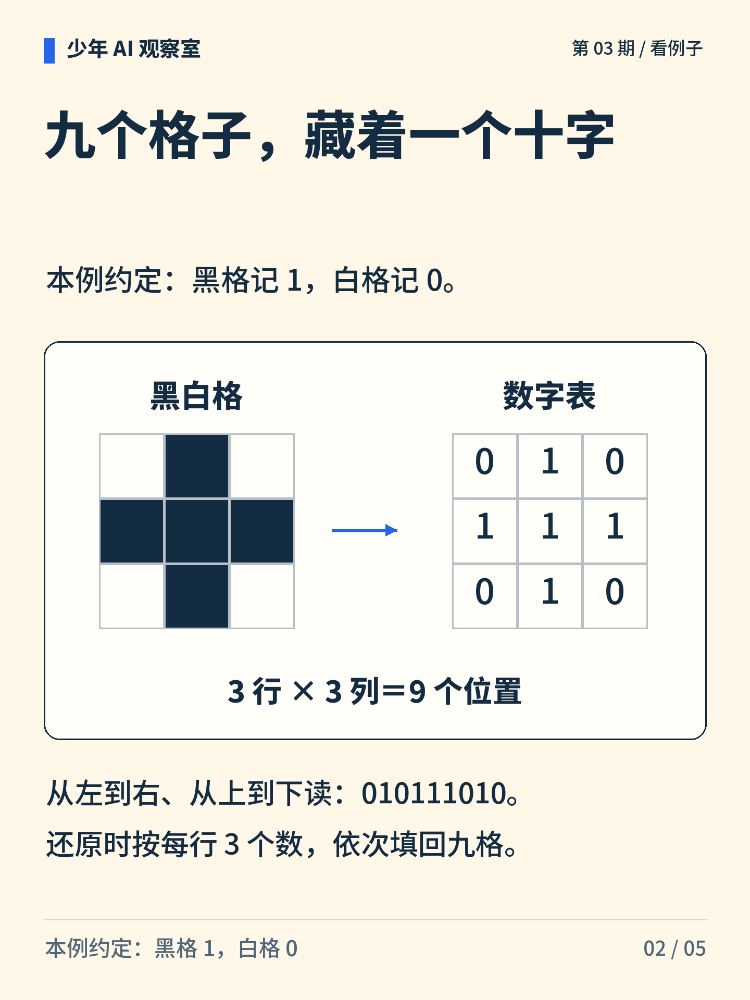
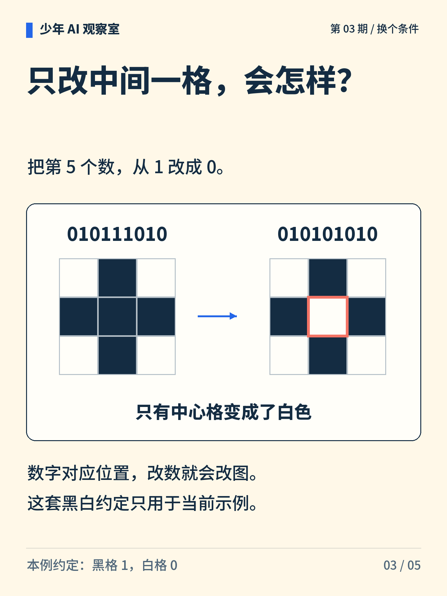
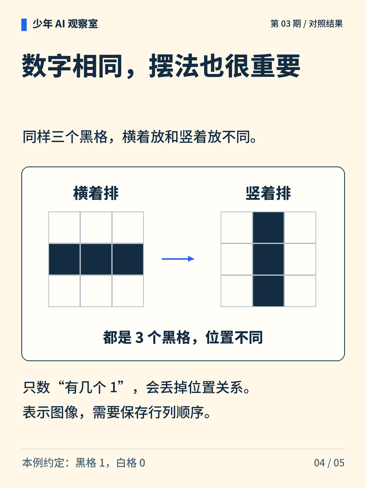
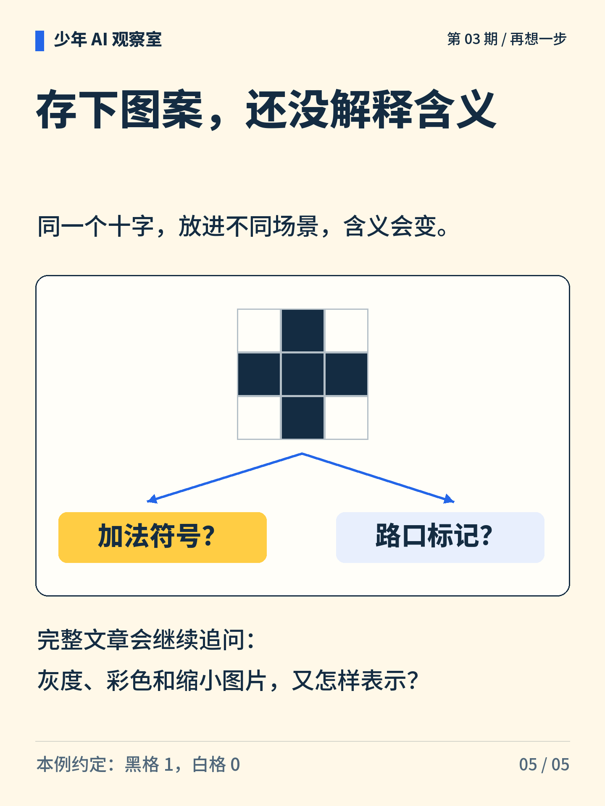

少年 AI 观察室 · 第 03 期
一张图片，怎么变成数字？
黑格写 1，白格写 0。把九个数字按原顺序填回格子，你能找回藏在里面的图案吗？

图解文字
九格十字与 010 / 111 / 010 对照，展示图案和数字的联系。

图解文字
三行依次为 010、111、010，连写成 010111010；每行三个数才能按图还原。

图解文字
第 5 个数对应中心格。它从 1 变 0 后，编码变为 010101010，十字中心空了。

图解文字
横放三个黑格和竖放三个黑格的黑格数相同，位置关系不同。

图解文字
同一个十字放在不同语境里，可能是加法符号，也可能是路口标记。存下形状还不等于确定含义。
想一想
如果只告诉别人数字，不告诉行列和读数顺序，会怎样？
展开参考思路
单独一串数字可能有不同摆法。要还原本例，需要说明它是 3×3 格子、黑为 1 白为 0，并从左到右、从上到下填写。其他形状或读数顺序可能产生不同图案。
数字、位置和读数约定一起，才能还原这幅图。
黑格 1、白格 0 是本例的约定，并非所有图像格式的统一规则。这里没有展开灰度、彩色和图像缩放。
正文首图为 AI 辅助生成的概念插画；第 2—5 张图按核对过的文字与规则绘制。
延伸阅读资料
文中算例与图解用于说明原理，不是实际模型的测评结果。研究结论对应以下资料。〔1〕 W3C，Portable Network Graphics (PNG) Specification，第三版，第 4.2、4.6、6.1、7.2 节（访问日期：2026-10-05）。
https://www.w3.org/TR/png-3/
〔2〕 Pillow，Concepts / Modes（官方文档；访问日期：2026-10-05）。
https://pillow.readthedocs.io/en/stable/handbook/concepts.html#modes
W3C，CSS Color Module Level 4，sRGB 表示（访问日期：2026-10-05）。
https://www.w3.org/TR/css-color-4/#sRGB-space
〔3〕 TensorFlow，Image classification（官方教程；访问日期：2026-10-05）。
https://www.tensorflow.org/tutorials/images/classification
书目信息沿用原稿，本轮未重新核验外部网页的可访问性。